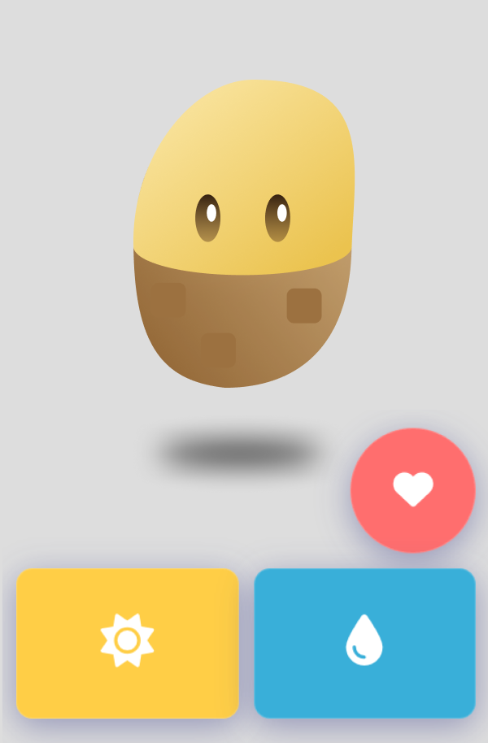
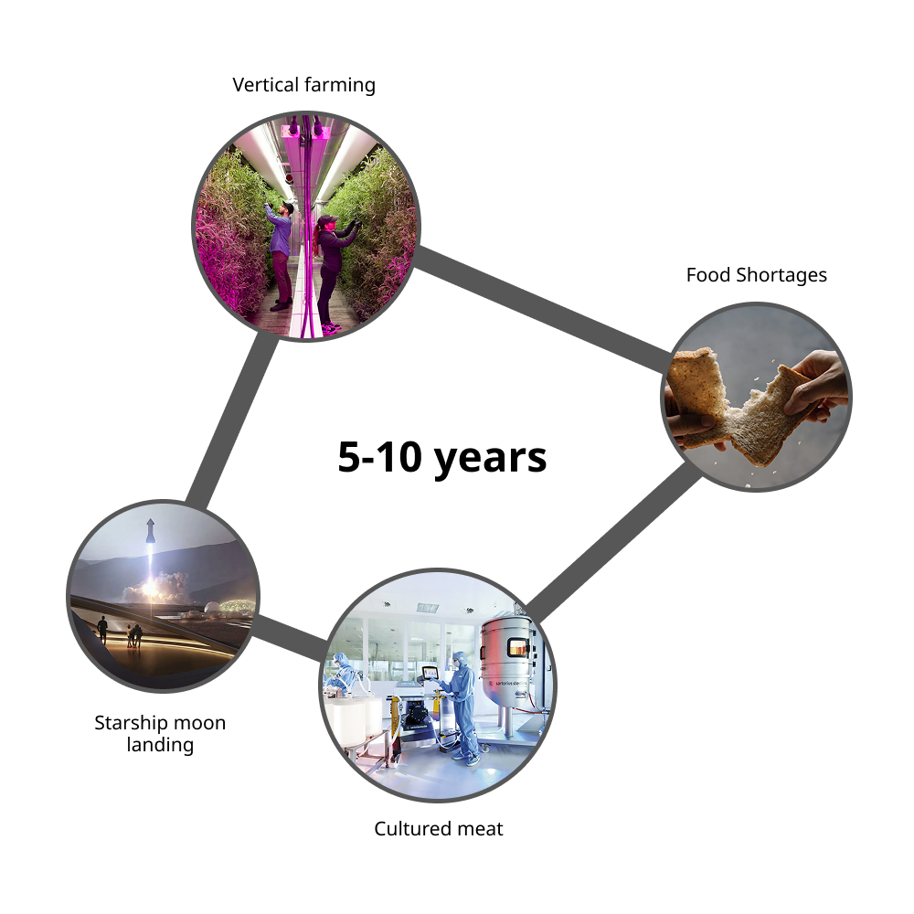
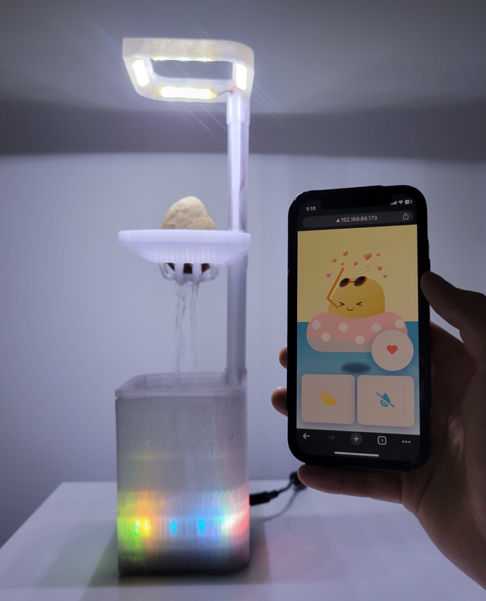
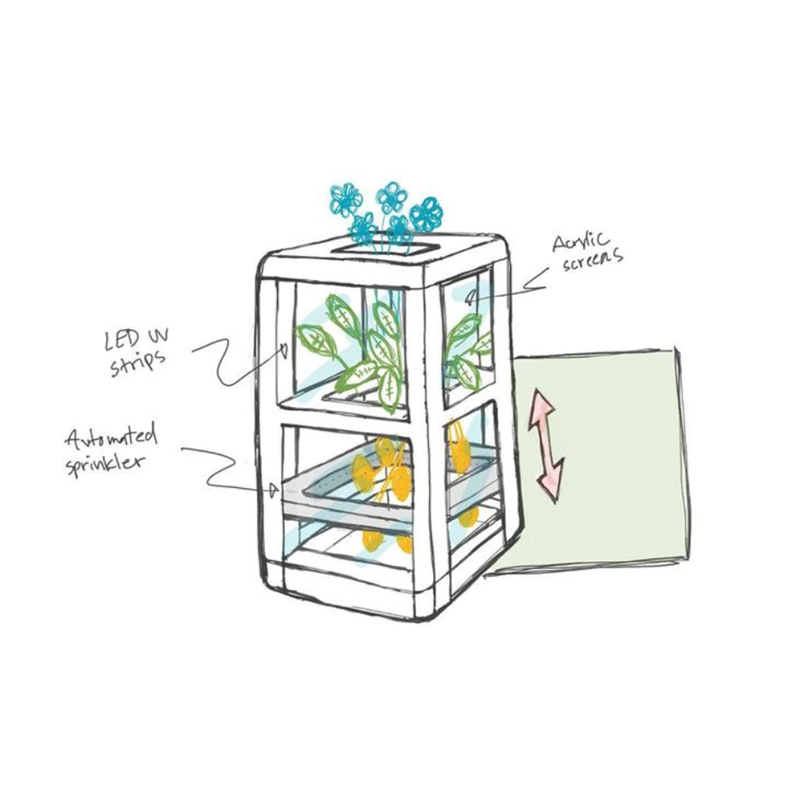
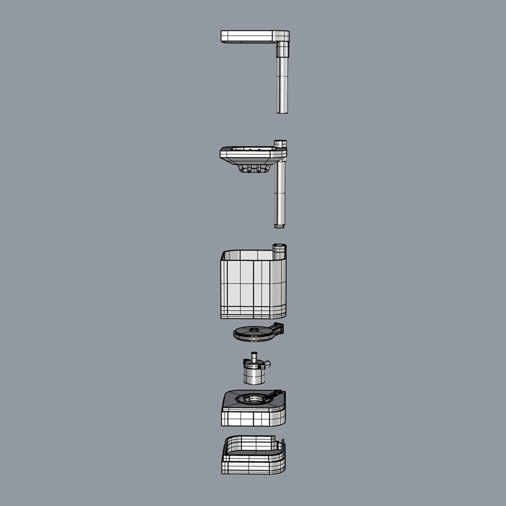
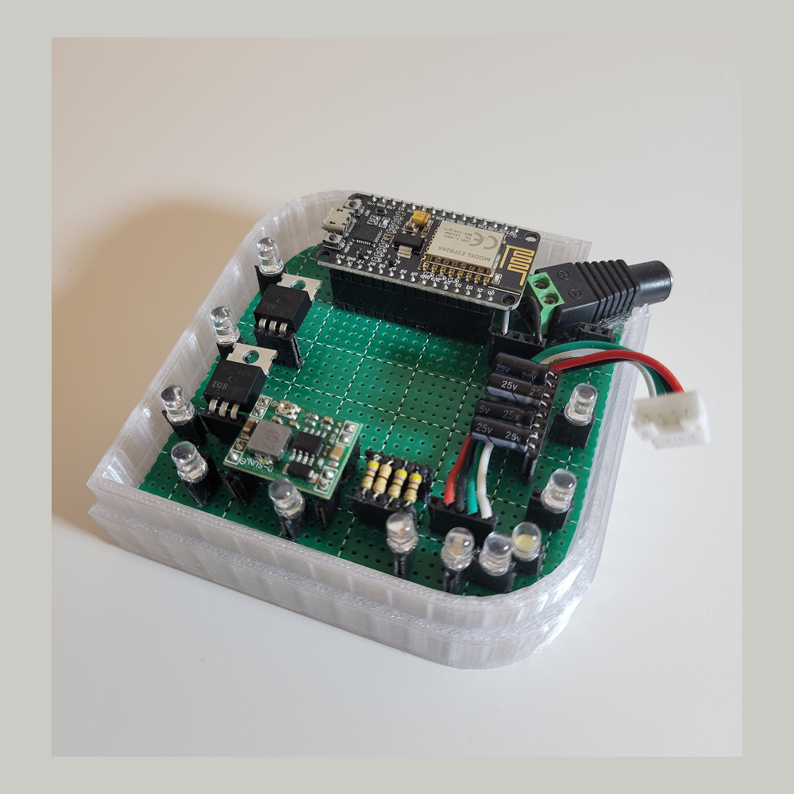

Problem
Late-night food options are limited to fast, low-quality choices.
Solution
A home aeroponic system enables fresh food production on demand.
Research
Emerging trends were mapped across food production, agriculture, energy, and space exploration to identify new opportunities for local food systems.

Opportunity
What if potatoes could be grown locally, harvested at home, and transformed into a premium food experience?

Iteration
Early sketches explored how a home aeroponic system could grow potatoes and connect into a broader food production idea.

The concept was then modeled in Rhino and iterated through multiple 3D printed versions to refine form and functionality.

A custom circuit board was built to connect the aeroponic hardware with a Wi-Fi-enabled Arduino for monitoring and automation.
